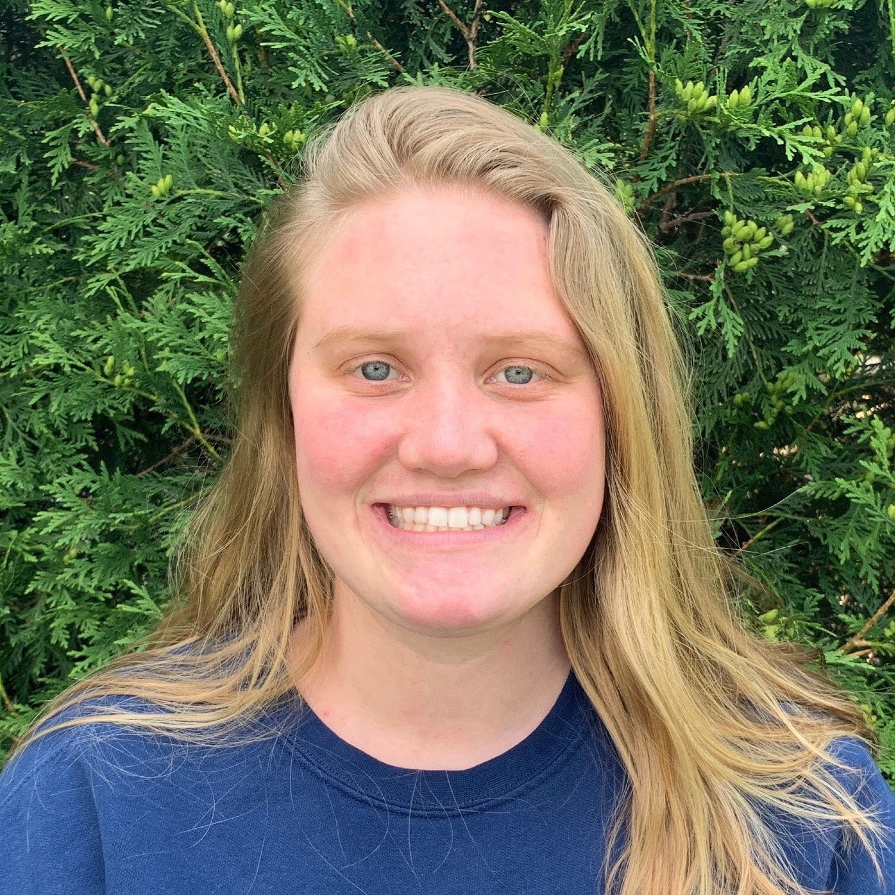

I am a graduate student at the Massachusetts Institute of Technology in Aeronautics and Astronautics with a specialization in Computational Science and Engineering. I am working with Dr. Adrián Lozano-Durán on physics-based and data-driven modeling for computational fluid dynamics of turbulence.
I completed my undergraduate degree in Aerospace Engineering with a minor in Atmospheric Sciences and a concentration in Computational Science and Engineering from the University of Illinois at Urbana-Champaign in May 2021.
My goal is to employ machine learning to model hypersonic flows, which involves complex aerothermodynamics and numerical methods.
Williams, E. and Lozano-Durán, A., ''Error Scaling of Wall-Modeled Large-Eddy Simulation of Compressible Wall Turbulence,''
American Physical Society Division of Fluid Dynamics, November 2021.
Williams, E., Ling. Y., Arranz, G., and Lozano-Durán, A., ''Numerical Schlieren of the X-59 QueSST,''
American Physical Society Division of Fluid Dynamics Gallery of Fluid Motion, November 2021.
Ling. Y., Williams, E., Arranz, G., and Lozano-Durán, A., ''Can the X-Wing Survive the Reentry to Dagobah?''
American Physical Society Division of Fluid Dynamics Gallery of Fluid Motion, November 2021.
Williams, E., Sharma, M.P., Venturi, S., and Panesi, M., ''Relation of Dissociation Rates to the Centrifugal Barrier,''
University of Illinois Undergraduate Research Symposium, April 2020.

email | cv | google scholar
(2021-) MS/PhD AA/CSE, MIT
(2017-2021) BS AE, UIUC
Research Interests:
Aerothermodynamics
Hypersonics
Turbulence
Magnetohydrodynamics
Quantum Computing
Computational Chemistry
Computational Aerodynamics
Fluid Dynamics
Numerical Methods
Machine Learning
Artificial Intelligence
High-Performance Computing